Data Structures and Algorithms
with Object-Oriented Design Patterns in C++
Data Structures and Algorithms
with Object-Oriented Design Patterns in C++
Consider a directed graph  as given by Definition
as given by Definition  .
.
For example, Table enumerates the sets of
emanating and incident edges
and the in- and out-degrees
for each of the vertices in graph  shown in Figure .
shown in Figure .
| vertex v | | out-degree | | in-degree |
| a | 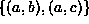 | 2 | 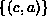 | 1 |
| b | 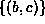 | 1 | 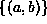 | 1 |
| c | 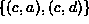 | 2 | 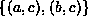 | 2 |
| d | 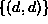 | 1 | 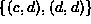 | 2 |
There is still more terminology to be introduced, but in order to do that, we need the following definition:
Definition (Path and Path Length)A path in a directed graph
is a non-empty sequence of vertices
where
for
such that 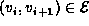 for
. The length of path P is k-1.
For example, consider again the graph  shown in Figure .
Among the paths contained in
shown in Figure .
Among the paths contained in  there is
the path of length zero,
there is
the path of length zero,  ;
the path of length one, 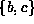;
the path of length two,
;
the path of length one, 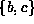;
the path of length two,  ; and so on.
In fact, this graph generates an infinite number of paths!
(To see how this is possible,
consider that 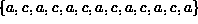 is a path in
; and so on.
In fact, this graph generates an infinite number of paths!
(To see how this is possible,
consider that 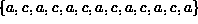 is a path in  ).
Notice too the subtle distinction between a path of length zero, say 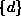,
and the path of length one 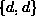.
).
Notice too the subtle distinction between a path of length zero, say 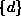,
and the path of length one 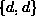.
 Copyright © 1997 by Bruno R. Preiss, P.Eng. All rights reserved.
Copyright © 1997 by Bruno R. Preiss, P.Eng. All rights reserved.